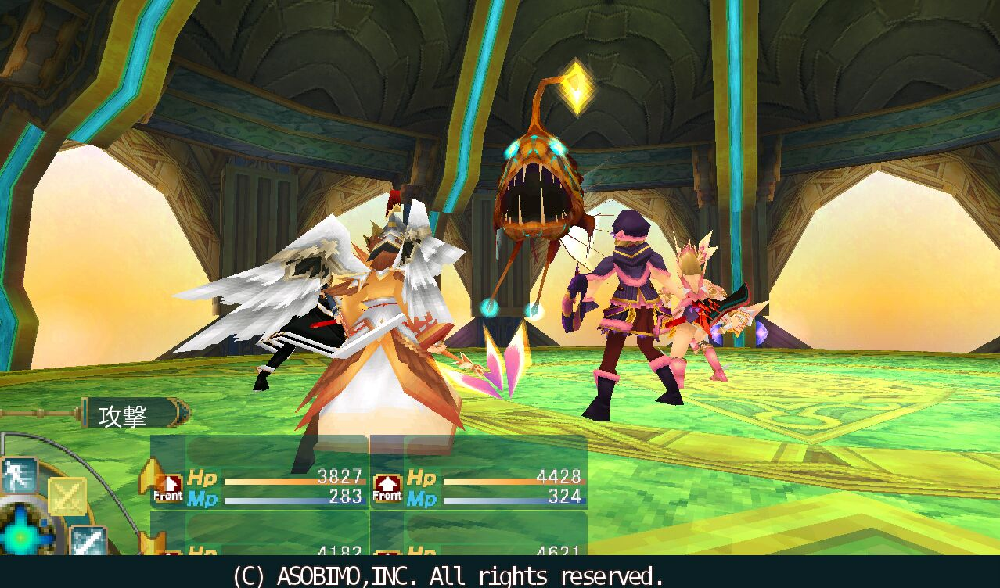

(home)
セレスアルカについて (N5)

セレスアルカは
ファンタジー
MMORPG
です。 この
ゲーム
は
アソビモ
によって
開発
されました。 セレスアルカは
美しい
グラフィック
と
広大な世界
が特徴です。 プレイヤーは
キャラクター
を
作成
し、
冒険
に
出発
します。
多く
の
プレイヤー
がセレスアルカを
楽しんでいます
。
セレスアルカの
世界
は
多彩
で、
探索
の
自由
があります。 プレイヤーは
スキル
や
装備
を
強化
し、
戦闘
を楽しむことができます。
リアルタイム
での
戦闘
は
スリル満点
です。
クエスト
や
イベント
を
クリア
して、
報酬
を
獲得
します。
仲間
と
一緒
に
冒険
し、
強敵
に
挑戦
します。
セレスアルカは
定期的
に
更新
され、新しい
コンテンツ
が
追加
されます。
イベント
や
キャンペーン
もよく
行われます
。 プレイヤーは
対人戦
や
協力戦
を楽しむことができます。
ギルド
に
参加して
、
仲間
と
一緒
に
活動
します。 セレスアルカは
長い間
愛されている
ゲームです。
豆知識
: セレスアルカは、
日本
だけでなく、
世界中
の
プレイヤー
にも
人気
があります。
Webpage compiled on 2024-08-06, 16:40 using
WebSCFL
.